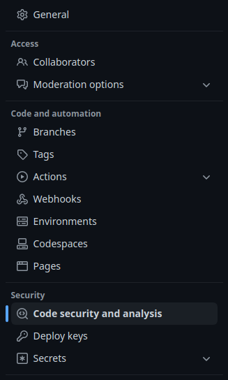
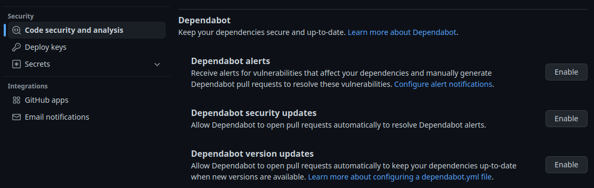
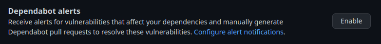
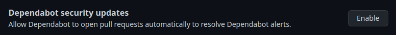
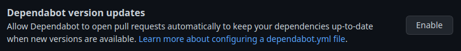
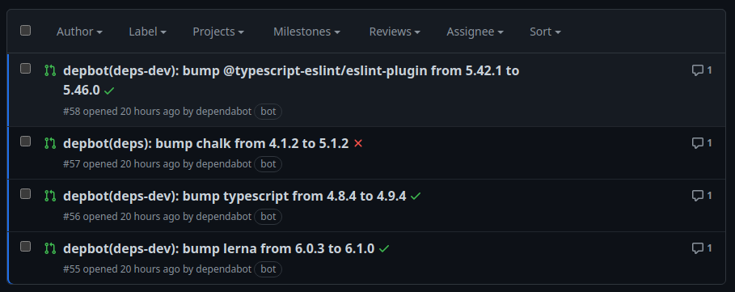

Análisis de dependencias de NPM
La seguridad es clave en el desarrollo de software y de su puesta en producción. Si estamos usando DevSecOps, tenemos la obligación de tener muy en cuenta la seguridad, entre otras cosas, encontrar las vulnerabilidades que pueda presentar nuestro software lo antes posible. Para intentar ayudarnos, GitHub dispone del servicio Dependabot, el cual vamos a presentar en esta lección.
Al finalizar, sabrá:
-
Qué es el análisis de dependencias.
-
Qué es y para qué sirve Dependabot.
-
Cómo activar y desactivar Dependabot.
-
Cómo personalizar el análisis que hará Dependabot.
Introducción
El desarrollo de software seguro debe formar parte de nuestro ADN. Tengamos en cuenta que las vulnerabilidades pueden ser explotadas por ciberatacantes y debemos intentar reducirlas todo lo posible. Recordemos que una vulnerabilidad (vulnerability) es una deficiencia o fallo del software que puede ser explotada por un atacante generalmente para realizar daño. Nuestro objetivo debe ser siempre reducir el número de vulnerabilidades de nuestro software.
El análisis de dependencias (dependency analysis) consiste en evaluar todas las dependencias del proyecto y comprobar si alguna de ellas presenta vulnerabilidades para evitar, así, que nuestro software pueda presentarlas también. Es una operación estática que no requiere la ejecución del código, simplemente comprueba si las versiones de los paquetes de los que depende el nuestro están en la base de datos de vulnerabilidades. Si se detecta una vulnerabilidad de este tipo, lo que tendremos que hacer es actualizar la versión a una que tenga resuelta la vulnerabilidad o, en caso más extremo, cambiar a otro paquete, por ejemplo, si el vulnerable ya no tuviera mantenimiento.
GitHub proporciona Dependabot, un servicio gratuito para realizar análisis de dependencias. En nuestro caso, consistirá en analizar las dependencias del archivo package.json y detectar si alguna de ellas directa o indirectamente presenta una vulnerabilidad. Para ello, se sirve de la base de datos de asesoramiento de GitHub (GitHub Advisory Database), https://github.com/advisories, donde almacena vulnerabilidades de seguridad de distintas plataformas. Si encuentra una vulnerabilidad, lo que hace es generar una alerta de dependencia (dependabot alert), la cual podemos visualizar en la pestaña Security del repositorio.
Una de sus principales ventajas es que funciona tanto con NPM como con otras plataformas como GitHub Actions, Go y Python.
Activación de Dependabot
El servicio se puede configurar a nivel de cuenta, lo que se aplicará a todos sus repositorios, o bien a nivel de repositorio individualmente. Su configuración es muy similar, aquí vamos a hacerlo a nivel de repositorio:
-
Ir al repositorio de GitHub.
-
Hacer clic en su pestaña Settings.
-
Ir a la configuración de seguridad, General > Security > Code security and analysis:

-
Ir a la sección Dependabot y configurar los distintos elementos individualmente:

Notificación de alertas de Dependabot
Una alerta (alert) no es más que un mensaje de atención sobre algo. Dependabot genera alertas cada vez que encuentra una vulnerabilidad entre nuestras dependencias. Estas alertas pueden visualizarse en la pestaña Security del repositorio y, si lo configuramos, en nuestros buzones de correo.
Para configurar las alertas, iremos a la configuración de Dependabot, tal y como acabamos de ver hace unos instantes. En ella, podemos activar las alertas haciendo clic en el botón Enable de Dependabot alerts; adicionalmente, podemos configurar las notificaciones mediante Configure alert notifications:

Reparación automática de las vulnerabilidades
Además de notificar alertas por vulnerabilidades, también podemos pedirle a Dependabot que intente arreglarlas actualizando las versiones de las dependencias a aquellas que no presenten vulnerabilidades conocidas. Para ello, primero hay que configurar esta funcionalidad. Editamos las opciones de seguridad, las mismas que vimos para las alertas. Y justo en la sección Dependabot, hacemos clic en el botón Enable de Dependabot security updates:

Le recomiendo configure las propiedades pull-request-branch-name, labels y commit-message del ecosistema npm del archivo dependabot.yaml.
Actualización de versiones de dependencias
Además de actualizar las versiones de dependencias con vulnerabilidades, también podemos solicitar que compruebe automáticamente las versiones de las dependencias cuando aparezcan nuevas versiones, sin necesidad de presentar vulnerabilidades, para ver si podemos actualizar a ellas. Haremos clic en el Enable de Dependabot version updates:

Esta funcionalidad lo que hace es detectar si hay nuevas versiones que cumplen con lo indicado en el archivo package.json. Para cada una de ellas, abre una nueva rama, realiza el cambio y abre una nueva solicitud de integración. Esto, a su vez y si lo tenemos así configurado en GitHub Actions, ejecutará el flujo de integración continua. En este punto, nosotros tendremos varias solicitudes de integración abiertas, algunas habrán podido pasar las pruebas y otras no. El siguiente ejemplo muestra que tres de las cuatro solicitudes pasan las pruebas, pero una de ellas no lo hace:

A partir de estas solicitudes y el resultado de los flujos de GitHub Actions, decidiremos qué hacer. En este caso particular, se integraron todas salvo chalk que se añadió a la lista de paquetes a ignorar porque sus nuevas versiones son ESM y el proyecto es CJS. Esto significa que son incompatibles y, por lo tanto, hay que mantener la última versión CJS de chalk hasta que el proyecto se convierta a ESM. Al añadir el paquete a la lista de dependencias a omitir en el archivo dependabot.yaml, automáticamente desaparecerá la solicitud de integración.
Archivo de configuración dependabot.yaml
Puede ser muy útil personalizar el análisis de dependencias de manera distinta para cada proyecto. Esto se realiza mediante el archivo dependabot.yaml ubicado en la carpeta .github del repositorio. Básicamente contiene las siguientes propiedades que vamos a presentar a continuación.
Comencemos con un archivo de ejemplo:
version: 2
updates:
- package-ecosystem: npm
directory: /
versioning-strategy: increase
schedule:
interval: weekly
day: sunday
time: "00:00"
pull-request-branch-name:
separator: /
labels:
- dependencies
commit-message:
prefix: depbot
prefix-development: depbot
include: scope
ignore:
- dependency-name: array-shuffle
- dependency-name: chalk
- dependency-name: file-type
- dependency-name: humanize-string
- dependency-name: indent-string
- dependency-name: inquirer
- dependency-name: term-size
Propiedad version
Mediante la propiedad version (version property), indicamos la versión de la especificación de Dependabot con la que configuramos el archivo. En nuestro caso, usaremos siempre el valor 2.
Propiedad registries
La propiedad registries (registries property) se utiliza para configurar los registros que consultará Dependabot. En nuestro caso, NPM. Si vamos a utilizar el oficial con paquetes públicos, no tenemos que configurar nada, por lo que no hace falta que añadamos esta propiedad. Pero vamos a mostrar un ejemplo ilustrativo:
registries:
npm:
type: npm-registry
url: https://registry.npmjs.org
username: ${{secrets.NPM_USER_NAME}}
password: ${{secrets.NPM_USER_PASSWORD}}
registries es un objeto donde cada una de sus propiedades representa un registro. El nombre de la propiedad será el identificador que posteriormente podremos indicar en la propiedad updates del archivo dependabot.yaml. En nuestro caso, hemos indicado npm como identificador del registro. A continuación, vamos a ver las propiedades de un registro de NPM:
| Propiedad | Descripción |
|---|---|
| type | Tipo del registro. Con NPM, siempre npm-registry. |
| url | URL del registro como, por ejemplo, https://registry.npmjs.org. |
| username | Nombre de la cuenta de usuario con la que conectar al registro. |
| password | Contraseña del usuario. |
Propiedad updates
Con la propiedad updates (updates property), configuramos más detenidamente las dependencias del proyecto. Por ejemplo, podemos indicar que ciertas dependencias, independientemente de que presenten vulnerabilidades, no se deben corregir. Consiste en un array o lista de objetos donde cada uno de sus elementos representa un ecosistema (ecosystem), el cual hace referencia a un administrador de paquetes del proyecto. En nuestro caso, el ecosistema de trabajo será sólo NPM, pero podríamos tener un repositorio con una parte escrita en NPM y otra en Rust, por lo que tendríamos que configurar ambos ecosistemas mediante su elemento correspondiente de la propiedad updates.
Cada ecosistema dispone de varias propiedades que lo configuran. Vamos a presentar las más utilizadas, centrándonos en NPM.
Propiedad package-ecosystem del ecosistema
La propiedad package-ecosystem (package-ecosystem property) indica el ecosistema en cuestión. En nuestro caso, su valor será siempre npm. Pero para otros ecosistemas podría ser cargo, gomod, pip o github-actions.
Propiedad directory del ecosistema
En la propiedad directory (directory property) indicaremos el directorio que contiene el archivo de metadatos del administrador de paquetes.
En nuestro caso, el administrador de paquetes es npm y su archivo de metadatos package.json.
Por lo tanto, tendremos que indicar la ubicación de este archivo en el repositorio.
Por lo general, será /.
Propiedad schedule del ecosistema
Para indicar cuándo deseamos que se analicen las dependencias, tenemos la propiedad schedule (schedule property), un objeto con las siguientes propiedades:
| Propiedad | Descripción |
|---|---|
| interval | Cada cuánto tiempo realizar el análisis: daily, weekly o monthly. |
| day | Qué día de la semana realizar el análisis si lo hacemos semanalmente: monday, tuesday, wednesday, thursday, friday, saturday o sunday. |
| time | A qué hora hacerlo en formato hh:mm. |
Ejemplo:
version: 2
updates:
- package-ecosystem: npm
directory: /
schedule:
interval: weekly
time: "00:00"
Propiedad target-branch del ecosistema
De manera predeterminada, se analizará la rama predeterminada del proyecto. Si deseamos configurar otra, indicaremos su nombre en la propiedad target-branch (target-branch property).
Propiedades allow e ignore del ecosistema
Dependabot analiza todas las dependencias del proyecto. Con las propiedades allow e ignore, personalizamos más concretamente las dependencias a analizar. Con allow, indicamos que sólo se analicen las indicadas; mientras que con ignore que ignore las indicadas.
Ambas propiedades son listas de objetos donde cada uno de ellos representa una dependencia. En el caso de la propiedad allow, cada dependencia se representa mediante un objeto con las siguientes propiedades:
| Propiedad | Descripción |
|---|---|
| dependency-name | Nombre de la dependencia. Se puede usar el comodín * para representar cualquier número de caracteres. |
| dependency-type | Indica el tipo de dependencia: direct, indirect, production, development u all. |
Las dependencias se clasifican en:
-
Directas (direct), aquellas que referenciamos en el package.json.
-
Indirectas (indirect), aquellas que son referenciadas por las directas u otras indirectas.
-
De producción (production), las indicadas en la propiedad dependencies del archivo package.json.
-
De desarrollo (development), las indicadas en la propiedad devDependencies del package.json.
Las dependencias a ignorar se indican en la propiedad ignore con las siguientes propiedades:
| Propiedad | Descripción |
|---|---|
| dependency-name | Nombre de la dependencia. |
| versions | Array de las versiones a ignorar. Si no se indica, todas. |
Veamos un ejemplo:
version: 2
updates:
- package-ecosystem: npm
directory: /
schedule:
interval: weekly
ignore:
- dependency-name: express
versions: [4.x, 5.x]
- dependency-name: lodash
Propiedades pull-request-branch-name, labels y commit-message del ecosistema
Dependabot genera una alerta cada vez que encuentra alguna vulnerabilidad o malware, pero también tiene la capacidad de intentar arreglarlo, actualizando la versión de la dependencia en riesgo. Si así lo deseamos, debemos configurar la opción Dependabot security updates, tal y como vimos anteriormente en esta lección.
Para realizar sus cambios, crea su propia rama de trabajo. Como prefijo de sus ramas, utilizará dependabot, pero podemos fijar, si lo deseamos, un separador. Esto se hace con la propiedad pull-request-branch-name (pull-request-branch-name property) como sigue:
pull-request-branch-name:
separator: /
Además, también podemos indicar las etiquetas que deseamos tenga esta solicitud de integración. Lo haremos mediante la propiedad label (label property). De manera predeterminada, será dependencies, pero podemos fijar cualquier otra. Ejemplo:
labels:
- npm
- dependencies
Sus mensajes de confirmación los podemos configurar mediante la propiedad commit-message (commit-message property), un objeto con las siguientes propiedades:
| Propiedad | Descripción |
|---|---|
| prefix | Prefijo a añadir al mensaje. |
| prefix-development | Prefijo a añadir si actualiza dependencias de desarrollo. |
| include | ¿Añadir la lista de dependencias actualizadas al mensaje? Si así lo deseamos, indicar scope. |
En el momento de escribir estas líneas, los prefijos no pueden tener una longitud superior a los 15 caracteres. Tenga en cuenta que Dependabot ya añade un prefijo que seguirá al que indiquemos nosotros. En las actualizaciones automáticas de dependencias de desarrollo, por ejemplo, su prefijo es, en el momento de escribir estas líneas, (deps-dev):.
Propiedad versioning-strategy
Como acabamos de ver, Dependabot puede actualizar las versiones de las dependencias del proyecto. Con la propiedad versioning-strategy (versioning-strategy property), lo que hacemos es indicar exactamente qué debe hacer. Los valores más frecuentes para el ecosistema npm son los siguientes:
| Valor | Descripción |
|---|---|
| auto | Sigue la estrategia predeterminada del ecosistema. |
| lockfile-only | Actualiza sólo el archivo package-lock.json. |
| increase | Actualiza tanto package.json como package-lock.json. |
Otros valores son widen e increase-if-necessary.
Propiedad registries del ecosistema
Recordemos que el archivo dependabot.yaml puede hacer referencia a varios registros, configurados con la propiedad registries del archivo. Cuando es necesario indicar que un ecosistema utilice uno o más registros determinados, de los definidos, en vez del predeterminado del administrador de paquetes, tenemos que indicar sus nombres en la propiedad registries del ecosistema que no es más que un array de textos. Ejemplo:
- package-ecosystem: npm
registries: [npm]
directory: /
schedule:
interval: weekly
day: sunday
time: "00:00"
pull-request-branch-name:
separator: /
labels:
- dependencies
commit-message:
prefix: depbot
prefix-development: depbot
include: scope